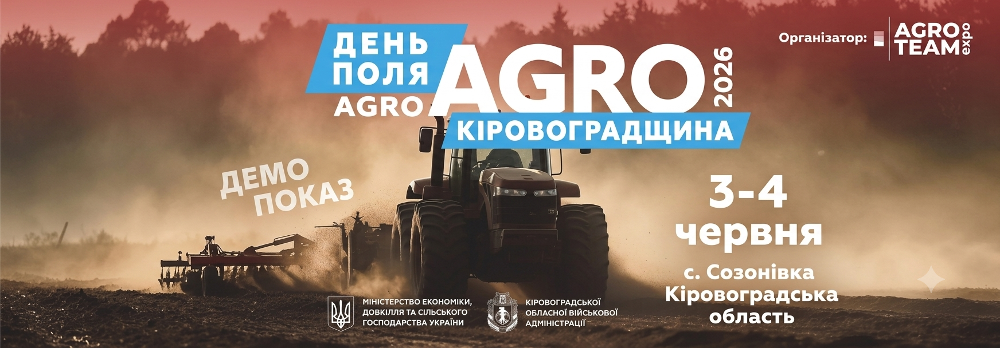
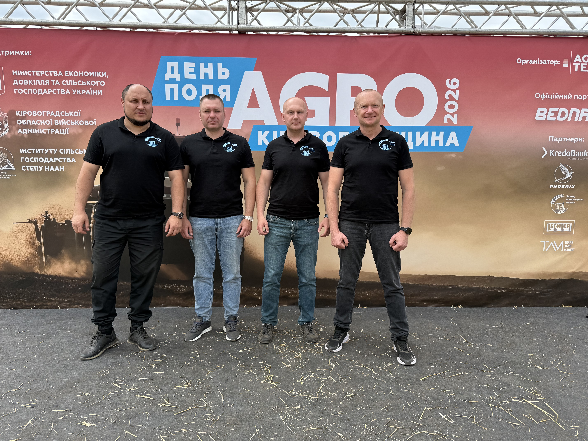
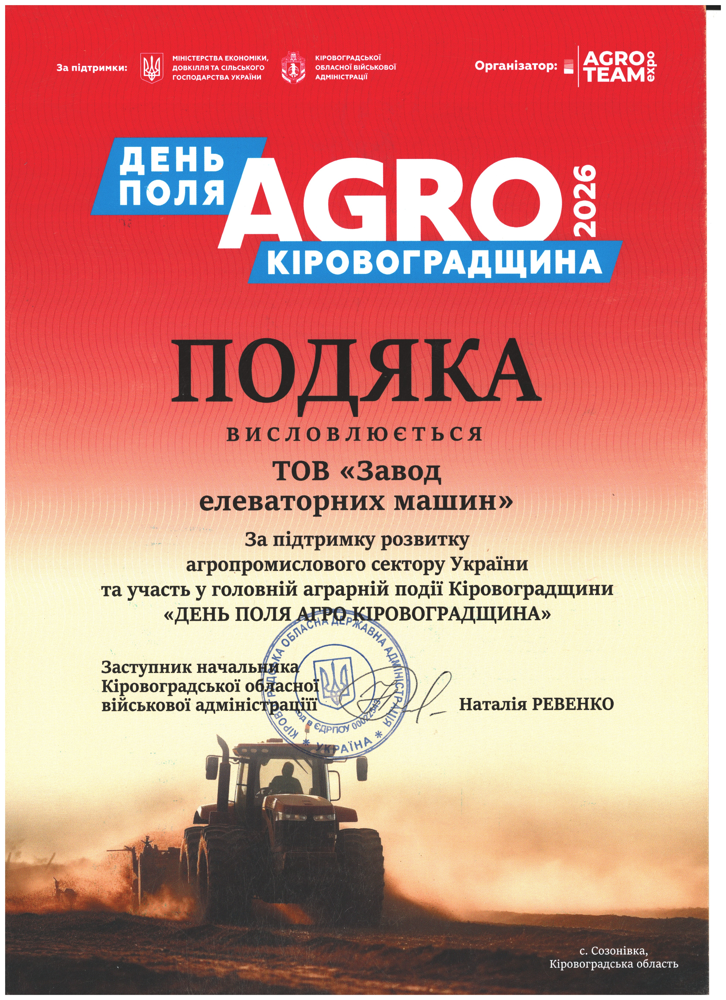

Ефективне сушіння за будь-яких умов: «Agro Star» презентували власні рішення на Кіровоградщині
Червень 2026Компанія «Agro Star» продовжує активну роботу на головних аграрних майданчиках країни. На початку червня наша команда взяла участь у масштабному регіональному заході — «ДЕНЬ ПОЛЯ AGRO КІРОВОГРАДЩИНА 2026», який проходив у с. Созонівка.
Ця виставка стала чудовою нагодою для демонстрації передових вітчизняних технологій, що допомагають фермерам оптимізувати витрати та зберігати максимум зібраного врожаю навіть у найскладніших погодних чи економічних умовах.

Головний акцент — власне виробництво зерносушарок
Центральним елементом нашої експозиції стала демонстрація сучасної високоефективної зерносушарки власного виробництва. Наш виробничий підрозділ, ТОВ «Завод елеваторних машин», вже багато років професійно спеціалізується на проектуванні та виготовленні сушильних комплексів різної потужності — від компактних моделей на 2 тонни за годину до потужних промислових гігантів продуктивністю 100 тонн за годину.
Представлене обладнання викликало неабиякий інтерес серед відвідувачів завдяки своїй універсальності та надійності. Наші сушарки ефективно працюють із найрізноманітнішими видами сільськогосподарських культур:
- Зернові та бобові: забезпечення ідеального бережного знімання вологи для пшениці, кукурудзи, сої, гороху тощо.
- Олійні культури: точне дотримання температурних режимів для соняшнику.
- Дрібнонасіннєві культури: бездоганна робота з примхливими та дрібними культурами, такими як ріпак.
Визнання та офіційна подяка від Кіровоградської ОВА

Професійний підхід нашої команди, внесок у технологічний розвиток регіону та підтримку продовольчої безпеки України отримали високу оцінку на державному рівні. За результатами виставки ТОВ «Завод елеваторних машин» було відзначено офіційною Подякою від Кіровоградської обласної військової адміністрації за підтримку розвитку агропромислового сектору країни.
Щиро дякуємо організаторам за високу довіру, а колегам та партнерам — за продуктивний діалог і зацікавленість нашими інженерними рішеннями. Працюємо далі заради розвитку українського агробізнесу!